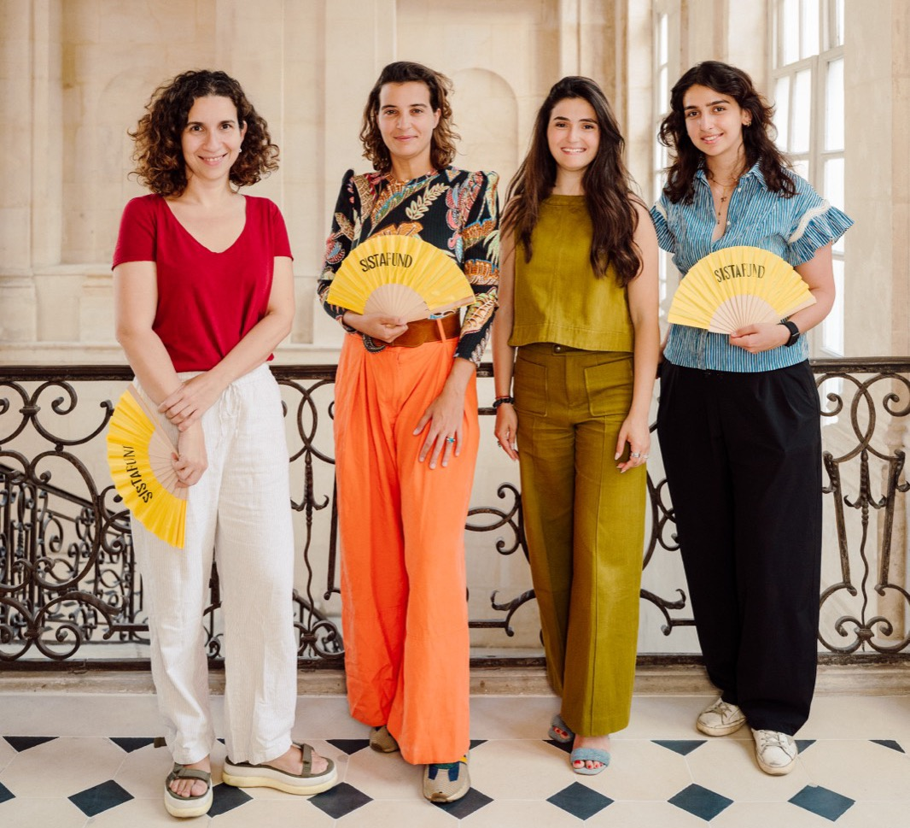

The game is changing
Gender equality is fueling discussions everywhere. General awareness is everything - and yes, it's happening. And yet we say: it's not enough.

Gender equality is fueling discussions everywhere. General awareness is everything - and yes, it's happening. And yet we say: it's not enough.
More gender-balanced teams. Why? They overperform, that's why. Yes: companies with +30% women in their founding team are 2.5x more profitable. Because they're bold. They beat adversity. They shake up conventions. They summon the future to challenge the present.

We're taking a stand - answering female entrepreneurs' calls everywhere. We're taking action - we have raised the largest European 70m€ gender-lens VC fund, backing companies founded by women and gender-balanced teams. We're partnering with them, in France, Europe and the U.S. From 0 to 1. And millions.
Our purpose is to help write new stories and create value - simply. Their vision will be our gender-balanced horizon.
Together, we have created a community of exceptional and committed talents : entrepreneurs, partners, best-in-class experts. Together, we will challenge the status quo. Together, we will knock down yesterday's biases - reshaping the world in 4 key areas: Deeptech, HealthTech, Climate, and AI & Enterprise Software.